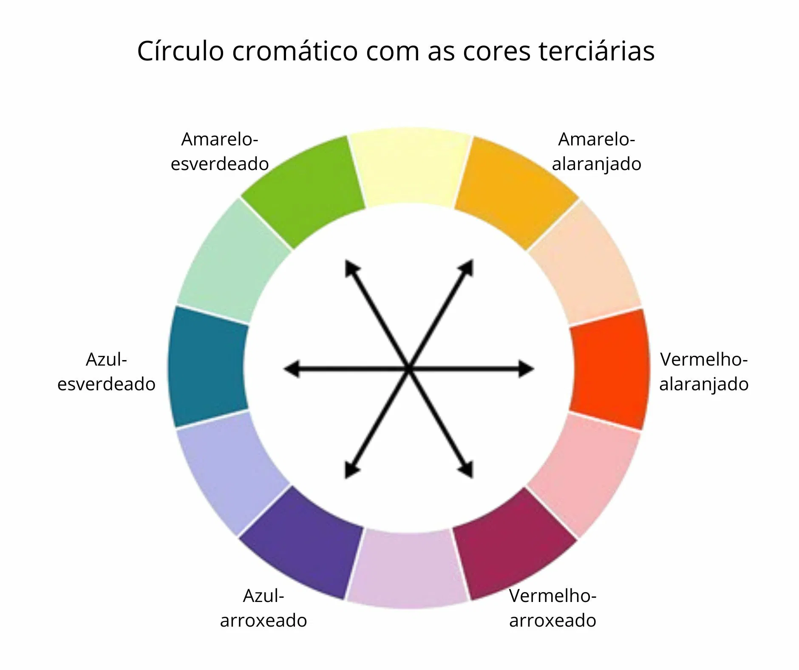

Full
Full

São misturas das cores primárias e segundárias Cor Primárias / Cor Secundária
FullDica Importante! Utilizar de 3 a 5 cores na sua Paleta de cores em um Projeto.
é o oposto da cor em linha reta!

as duas cores Vizinhas

As duas cores vizinhas e a cor oposta em linha reta.

Escolhe duas cores vizinhas pula uma cor e escolhe a proxima.

Escolhe a cor Primária e pula uma cor.

Escolhe a Principal e pula 3 e escolhe a proxima formando um triângulo

Pula duas e escolhe a próxima

Formando um Retangulo

Degrade mecher na saturação e luminozidade das cores